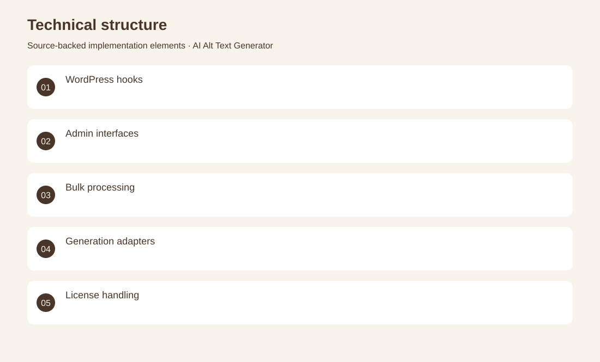
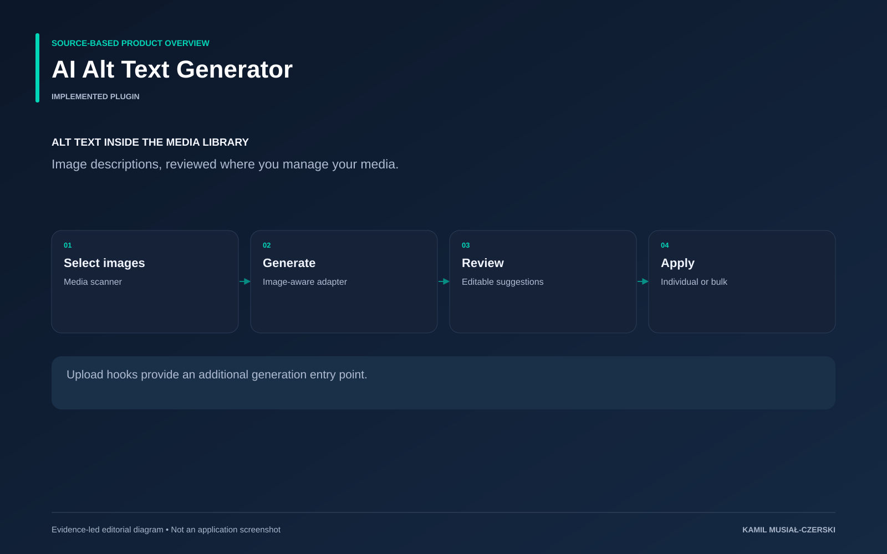

The project
The plugin works inside the WordPress media library, turning selected images into editable alternative-text suggestions. A media scanner, generation adapter and administrator interface support individual and bulk workflows, while upload hooks provide an automatic entry point.
The problem
Media libraries accumulate images without useful alternative text.
The solution
A native editorial workflow lets users select images, request descriptions and review generated text.
My contribution
Implemented the media scanner, image-generation adapter, bulk review interface and upload-triggered generation hooks.
AI capabilities
Vision-assisted image descriptions; Bulk alternative-text generation
Technical structure

Product overview

The portfolio cover is an editorial illustration. No live product screenshot is presented for this project.
Showcase assets
{kind=link}
{kind=link}
{kind=link}
New portfolio identity. Newly designed marks are portfolio treatments, not claims of official client branding.